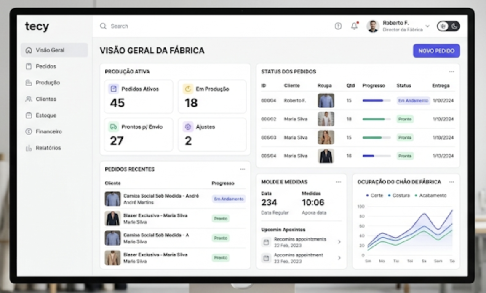

Imagem do projetoimg/tecy.png
Produto SaaS · Full stack
Tecy — ERP multi-tenant para confecções
ERP SaaS para confecções de roupas personalizadas, com isolamento de dados por empresa em três camadas (JWT, RLS e camada de acesso), monorepo e testes de isolamento.
ReactNestJSSupabaseTypeScriptDocker